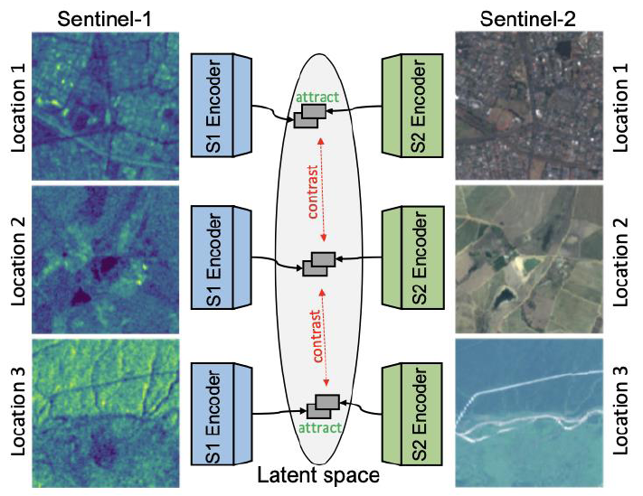

Dieses Forschungsergebniss besteht aus zwei Teilen, die im Folgenden präsentiert werden.
Kontrastive selbstüberwachte Datenfusion für Satellitenbilder
Überwachtes Lernen für jede Aufgabe erfordert große Mengen an annotierten Daten. Besonders im Fall von Satellitenbildern sind unannotierte Daten allgegenwärtig, während der Annotierungsprozess oft mühsam und kostspielig ist. Daher ist es sehr lohnenswert, Methoden zu nutzen, um die Menge an benötigten annotierten Daten zu minimieren, die erforderlich ist, um eine gute Leistung der nachgelagerten Aufgabe zu erzielen. In unserer ersten Arbeit nutzen wir kontrastives Lernen in einem multimodalen Setup, um dieses Ergebnis zu erreichen.
{kind=link}

Wir experimentieren mit verschiedenen Ansätzen des selbstüberwachten Lernens, einschließlich SimCLR (Chen et al., 2020) und Multi-Modal Alignment (MMA, Windsor et al., 2021), um unser Modell vorzutrainieren. Basierend auf SimCLR entwickeln wir unseren eigenen Dual-SimCLR-Ansatz, der oben dargestellt ist. In all unseren Ansätzen verzichten wir auf die Nutzung von Datenaugmentationen, die typischerweise für kontrastives selbstüberwachtes Lernen erforderlich sind. Stattdessen nutzen wir aus, dass unsere Datenmodalitäten ko-registriert sind um die für den Lernprozess erforderliche kontrastive Kraft zu erzeugen.
Wir entwickeln die Dual-SimCLR-Architektur für diese Arbeit. Anstatt Datenaugmentationen und ein gemeinsames Backbone zu verwenden, wie es in SimCLR der Fall ist, verwendet unsere Architektur ein separates Backbone für jede Modalität, was zu separaten Darstellungen führt. Im Vortraining des Modells nutzen wir ein MLP als Projektionskopf, um latente Darstellungen zu generieren, auf deren Grundlage der kontrastive Verlust arbeitet. Für das Training einer nachgelagerten Aufgabe feintunen wir den Backbone und implementieren eine vollständig verbundene Schicht als Klassifizierungskopf. Das Modell wird auf großen Mengen unannotierter Daten vortrainiert und auf kleinen Mengen annotiertere Daten feingetunt.
Für das Vortraining nutzen wir den SEN12MS-Datensatz (Schmitt et al., 2019), der aus Paaren von Sentinel-1- und Sentinel-2-Ausschnitten besteht, wobei verfügbare Labels ignoriert werden; für das Feintuning verwenden wir den GRSS Data Fusion 2020-Datensatz, der mit hochauflösenden LULC-Segmentierungslabels versehen ist. Die nachgelagerte Aufgabe besteht darin, in einem Single-Label- und Multi-Label-Ansatz zu lernen.
Unsere Ergebnisse zeigen, dass insbesondere Dual-SimCLR sehr erfolgreich darin ist, reichhaltige Darstellungen zu lernen. Die Ergebnisse sowohl für die Single-Label- als auch für die Multi-Label-nachgelagerten Aufgaben übertreffen deutlich eine Reihe von vollständig überwachten Baselines, die einzelne Modalitäten oder verschiedene Datenfusionsansätze nutzen, sowie die anderen getesteten kontrastiven selbstüberwachten Ansätze. Wir können zeigen, dass die gelernten Darstellungen reichhaltig und informativ sind.
Noch wichtiger ist, dass wir die Effizienz des Vortrainings mit unserem Ansatz zeigen können: Durch das Feintuning der gelernten Darstellungen des vortrainierten Backbones sind wir in der Lage, jede vollständig überwachte Baseline mit nur 10% der annotierten Daten zu übertreffen.
Abschließend ermöglicht unser Ansatz damit das label-effiziente Training von Deep-Learning-Modellen für die Fernerkundung, indem er auf einer großen Menge unbeschrifteter Daten vortrainiert.
Die Ergebnisse dieser Studie wurden auf dem ISPRS 2022-Kongress in Nizza, Frankreich, präsentiert (die Ergebnisse wurden von Michael Mommert vorgestellt, aber die Arbeit wurde von Linus Scheibenreif durchgeführt).
Selbstüberwachte Vision-Transformer für die Segmentierung und Klassifizierung von Landnutzung
In einer natürlichen Erweiterung der vorherigen Arbeit ersetzen wir unser vorheriges Modell-Backbone durch ein Paar leistungsstarker Swin-Transformer. Diese Backbones werden in einem kontrastiven selbstüberwachten Ansatz vortrainiert, ähnlich wie in unserer vorherigen Arbeit.

Das Ziel dieser SwinUNet-Architektur ist es, reichhaltige, aufgabenunabhängige Darstellungen für Anwendungen der Erdbeobachtung zu lernen. Wir testen dieses Merkmal, indem wir das vortrainierte Modell in zwei verschiedenen Aufgaben bewerten: patchbasierte Bildklassifizierung und semantische Bildsegmentierung, wobei wir unterschiedliche Köpfe für diese Aufgaben verwenden.
{kind=link}
Unsere Ergebnisse stützen unsere Annahme, dass die gelernten Darstellungen reichhaltig und tatsächlich aufgabenunabhängig sind. Ähnlich wie bei unseren vorherigen Ergebnissen können wir zeigen, dass das Feintuning mit deutlich kleineren Mengen an annotierten Daten in der Lage ist, das vollständig überwachte Training von Grund auf zu übertreffen, sowohl bei der Bildklassifizierung als auch bei der semantischen Segmentierung. Darüber hinaus können wir zeigen, dass Transformer-Architekturen erfolgreich beide nachgelagerten Aufgaben mit guter Leistung erlernen.

Die Ergebnisse dieser Arbeit umfassen eine Reihe vortrainierter Backbone-Architekturen und wurden auf dem Earthvision-Workshop bei CVPR 2023 veröffentlicht, wo sie mit dem Preis für das beste Studentenpapier ausgezeichnet wurden!
Zukunftsaussichten
Wir möchten darauf hinweisen, dass diese Forschungsrichtung nun von der Schweizerischen Nationalfonds (SNF) gefördert wird. Das Ziel dieses Projekts ist es, selbstüberwachtes Lernen für verschiedene Arten von multimodalen Erdbeobachtungsdaten zu kombinieren. Bleiben Sie dran für unsere kommenden Ergebnisse!
Bibliographie
-
Scheibenreif, L., Hanna, J., Mommert, M., Borth, D., “Self-Supervised Vision Transformers for Land-cover Segmentation and Classification”, Earthvision Workshop at IEEE/CVPR 2022, publication (open access). This work was awarded the best student paper award of the Earthvision 2022 workshop.
-
Scheibenreif, L., Mommert, M., Borth, D., “Contrastive Self-Supervised Data Fusion for Satellite Imagery”, International Symposium for Photogrammetry and Remote Sensing, publication, 2022.